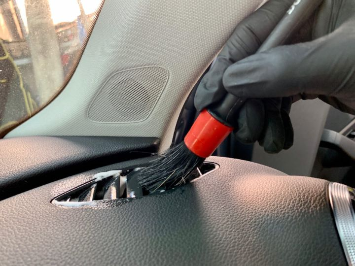
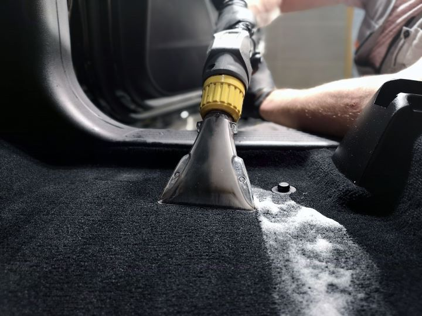
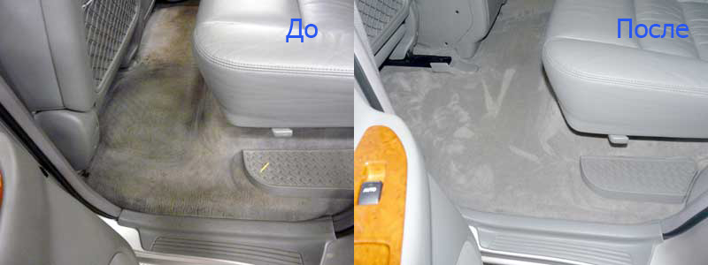

Химчистка салона
Легкая химчистка
Легкая химчистка салона предназначена для освежения салона: производится деликатная очистка поверхностей, устраняются небольшие загрязнения, очищается и обрабатывается кожа, пластик, текстиль, стекла. Химчистка потолка и багажника в рамках этой программы не производится.
Стандартная химчистка
Стандартная химчистка автомобиля предназначена для очистки салона со средними и сильными загрязнениями. Эта программа отличается от легкой химчистки степенью воздействия – мы отчистим соль, пятна, устраним запахи и залезем в самые труднодоступные места.
Глубокая химчистка
Глубокая химчистка предназначена для очистки салонов с сильными загрязнениями, запахами, после ДТП, длительной стоянки или даже пожара.
Стоимтость химчистки:
| Тип химчистки | Легковые | Внедорожники |
| Легкая химчистка | 12 000 | 14 000 |
| Стандартная химчистка | 15 000 | 17 000 |
| Глубокая химичистка | 20 000 | 22 000 |